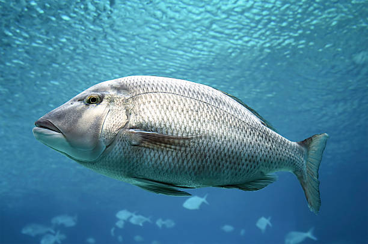
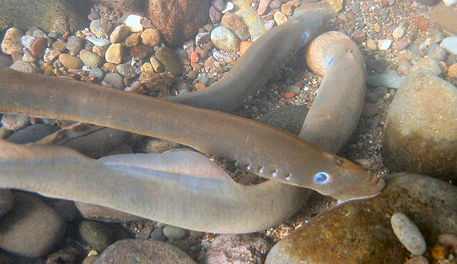

Bony Fishes
Bony fishes are a group of aquatic vertebrates characterized by having a skeleton made of bone. This characteristic is in contrast to the cartilaginous fishes, a group of fish whose skeleton consists of the firm but flexible and elastic tissue called cartilage.
In addition to having a rigid bone skeleton, bony fish are characterized anatomically by having gill covers and an air bladder. Bony fishes use gills to breathe and have color vision.

Cartilaginous Fish
Cartilaginous fish are so named because, instead of bony skeletons, their body frame consists of cartilage. Flexible but still tough, cartilage provides enough structural support to enable these fish to grow to enormous sizes.
Cartilaginous fish include sharks, rays, skates, and chimaeras. These fish all fall into the group called elasmobranchs.
Cartilaginous fish also differ from bony fish in the way that they breathe. While bony fish have a bony covering over their gills, cartilaginous fish have gills that open to the water directly through slits. Cartilaginous fish may also breathe through spiracles rather than gills.

Lampreys
Lampreys are jawless vertebrates that have a long, narrow body. They lack scales and have a sucker-like mouth filled with little teeth. Although they look like eels, they are not the same and should not be confused.
There are two kinds of lampreys: parasitic and non-parasitic.
Parasitic lampreys are sometimes referred to as the vampires of the sea. They are called so because they use their sucker-like mouth to attach themselves to the sides of other fish. Then, their sharp teeth cut through flesh and suck out blood and other essential body fluids.